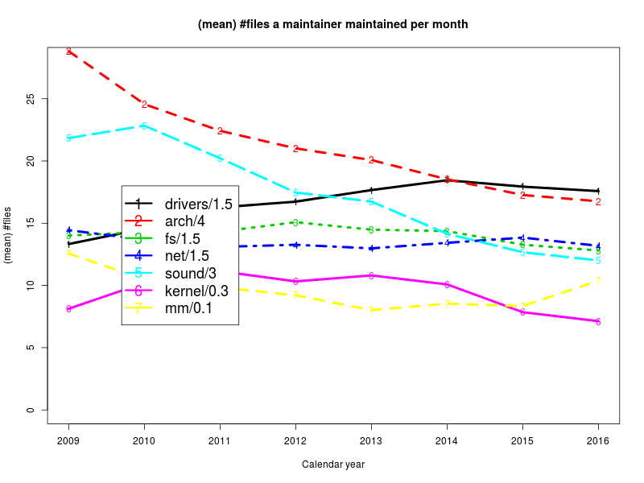
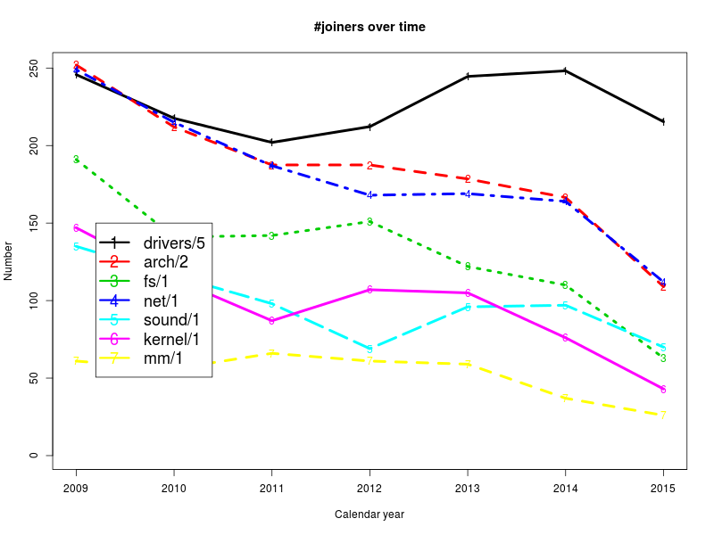
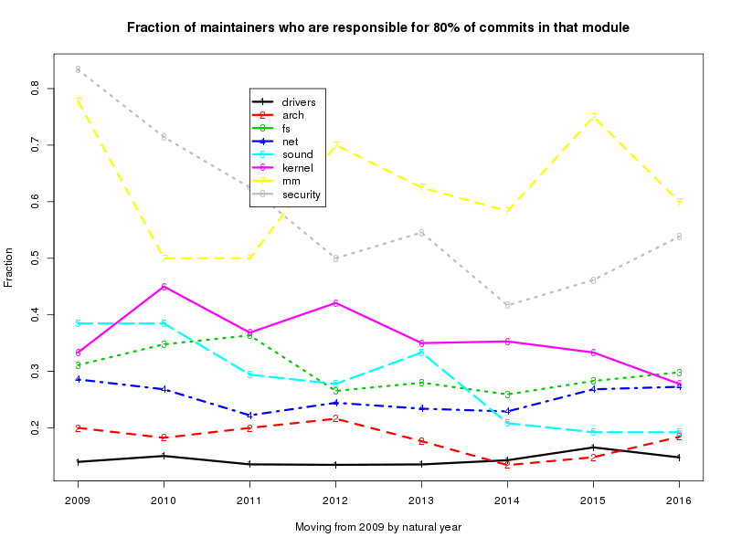

Note -- Measuring maintainers in the Linux kernel
Measuring how maintainers spend their precious time in the Linux kernel
| ratio of yearly#authors over monthly#maintainers (r3,c1) | ratio of monthly#authors over monthly#maintainers |
|---|
| |
| median adjusted #files maintained per maintainer over years | mean adjusted #files maintained per maintainer over years |
|---|
|  |
| median adjusted #authors on maintained files of a maintainer over natural years | mean adjusted #authors on maintained files of a maintainer over natural years |
|---|
| |
| median adjusted #commits on maintained files of a maintainer over natural years (r6,c1) | mean adjusted #commits on maintained files of a maintainer over natural years |
|---|
| |
| #commits maintained over natural years (mod0) | #authors on maintained files over natural years (mod0) | #files on maintained files over natural years (mod0) | #maintainers over natural years (mod0) | #joiners over natural years (mod0) |
|---|
 | | | |  |
| fraction of maintainers who are responsible for 80% of files in that module | fraction of maintainers who are responsible for 80% of commits in that module | fraction of maintainers who are responsible for 80% of authors in that module |
|---|
|  | |